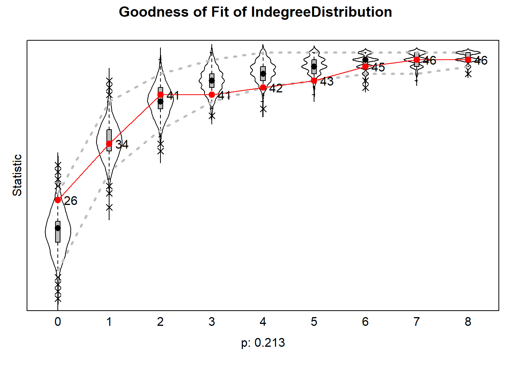

rm(list = ls())fpackage.check <- function(packages) {
lapply(packages, FUN = function(x) {
if (!require(x, character.only = TRUE)) {
install.packages(x, dependencies = TRUE)
library(x, character.only = TRUE)
}
})
}
fsave <- function(x, file = NULL, location = "./data/processed/") {
ifelse(!dir.exists("data"), dir.create("data"), FALSE)
ifelse(!dir.exists("data/processed"), dir.create("data/processed"), FALSE)
if (is.null(file))
file = deparse(substitute(x))
datename <- substr(gsub("[:-]", "", Sys.time()), 1, 8)
totalname <- paste(location, datename, file, ".rda", sep = "")
save(x, file = totalname) #need to fix if file is reloaded as input name, not as x.
}
fload <- function(filename) {
load(filename)
get(ls()[ls() != "filename"])
}
fshowdf <- function(x, ...) {
knitr::kable(x, digits = 2, "html", ...) %>%
kableExtra::kable_styling(bootstrap_options = c("striped", "hover")) %>%
kableExtra::scroll_box(width = "100%", height = "300px")
}
# this is the most important one. We created it in the previous script
f_pubnets <- function(df_scholars = df, list_publications = publications, discip = "sociology", affiliation = "RU",
waves = list(wave1 = c(2018, 2019, 2020), wave2 = c(2021, 2022, 2023))) {
publications <- list_publications %>%
bind_rows() %>%
distinct(title, .keep_all = TRUE)
df_scholars %>%
filter(affil1 == affiliation | affil2 == affiliation) %>%
filter(discipline == discip) -> df_sel
networklist <- list()
for (wave in 1:length(waves)) {
networklist[[wave]] <- matrix(0, nrow = nrow(df_sel), ncol = nrow(df_sel))
}
publicationlist <- list()
for (wave in 1:length(waves)) {
publicationlist[[wave]] <- publications %>%
filter(gs_id %in% df_sel$gs_id) %>%
filter(year %in% waves[[wave]]) %>%
select(author) %>%
lapply(str_split, pattern = ",")
}
publicationlist2 <- list()
for (wave in 1:length(waves)) {
publicationlist2[[wave]] <- publicationlist[[wave]]$author %>%
# lowercase
lapply(tolower) %>%
# Removing diacritics
lapply(stri_trans_general, id = "latin-ascii") %>%
# only last name
lapply(word, start = -1, sep = " ") %>%
# only last last name
lapply(word, start = -1, sep = "-")
}
for (wave in 1:length(waves)) {
# let us remove all publications with only one author
remove <- which(sapply(publicationlist2[[wave]], FUN = function(x) length(x) == 1) == TRUE)
publicationlist2[[wave]] <- publicationlist2[[wave]][-remove]
}
for (wave in 1:length(waves)) {
pubs <- publicationlist2[[wave]]
for (ego in 1:nrow(df_sel)) {
# which ego?
lastname_ego <- df_sel$lastname[ego]
# for all publications
for (pub in 1:length(pubs)) {
# only continue if ego is author of pub
if (lastname_ego %in% pubs[[pub]]) {
aut_pot <- which.max(pubs[[pub]] %in% lastname_ego)
# only continue if ego is first author of pub
if (aut_pot == 1) {
# check all alters/co-authors
for (alter in 1:nrow(df_sel)) {
# which alter
lastname_alter <- df_sel$lastname[alter]
if (lastname_alter %in% pubs[[pub]]) {
networklist[[wave]][ego, alter] <- networklist[[wave]][ego, alter] + 1
}
}
}
}
}
}
}
return(list(df = df_sel, network = networklist))
}packages = c("RSiena", "tidyverse", "stringdist", "stringi")
fpackage.check(packages)## Loading required package: RSiena## Warning: package 'RSiena' was built under R version 4.2.3## [[1]]
## NULL
##
## [[2]]
## NULL
##
## [[3]]
## NULL
##
## [[4]]
## NULLdf <- fload("./Data/Data_processed/20230621df_complete.rda")
publications <- fload("./Data/Data_processed/20230621list_publications_jt.rda")output <- f_pubnets()
df_soc <- output[[1]]
df_network <- output[[2]]# let us check the number of waves
length(df_network)## [1] 2wave1 <- df_network[[1]]
wave2 <- df_network[[2]]
# let us put the diagonal to zero
diag(wave1) <- 0
diag(wave2) <- 0
# we want a binary tie (not a weighted tie)
wave1[wave1 > 1] <- 1
wave2[wave2 > 1] <- 1
# put the nets in an array
net_soc_array <- array(data = c(wave1, wave2), dim = c(dim(wave1), 2))
# dependent
net <- sienaDependent(net_soc_array)# gender
gender <- as.numeric(df_soc$gender == "female")
gender <- coCovar(gender)
mydata <- sienaDataCreate(net, gender)myeff <- getEffects(mydata)
# effectsDocumentation(myeff)ifelse(!dir.exists("results"), dir.create("results"), FALSE)## [1] FALSEprint01Report(mydata, modelname = "./results/soc_init")myeff <- includeEffects(myeff, isolateNet, inPop, outAct) #we know that quite a lot of staff has not published with someone else## effectName include fix test initialValue parm
## 1 indegree - popularity TRUE FALSE FALSE 0 0
## 2 outdegree - activity TRUE FALSE FALSE 0 0
## 3 network-isolate TRUE FALSE FALSE 0 0myeff <- includeEffects(myeff, sameX, egoX, altX, interaction1 = "gender")## effectName include fix test initialValue parm
## 1 gender alter TRUE FALSE FALSE 0 0
## 2 gender ego TRUE FALSE FALSE 0 0
## 3 same gender TRUE FALSE FALSE 0 0myAlgorithm <- sienaAlgorithmCreate(projname = "soc_init")## If you use this algorithm object, siena07 will create/use an output file soc_init.txt .(ans <- siena07(myAlgorithm, data = mydata, effects = myeff))## Estimates, standard errors and convergence t-ratios
##
## Estimate Standard Convergence
## Error t-ratio
##
## Rate parameters:
## 0 Rate parameter 4.0569 ( 1.0695 )
##
## Other parameters:
## 1. eval outdegree (density) -3.0048 ( 0.5510 ) 0.0879
## 2. eval reciprocity 1.6476 ( 0.4681 ) 0.0650
## 3. eval indegree - popularity 0.2249 ( 0.0540 ) 0.0837
## 4. eval outdegree - activity 0.0919 ( 0.0795 ) 0.0191
## 5. eval network-isolate 2.1091 ( 1.1846 ) -0.0695
## 6. eval gender alter -0.3907 ( 0.2863 ) -0.0660
## 7. eval gender ego 0.4380 ( 0.3327 ) -0.0320
## 8. eval same gender 0.1421 ( 0.2621 ) 0.0896
##
## Overall maximum convergence ratio: 0.1721
##
##
## Total of 2284 iteration steps.# (the outer parentheses lead to printing the obtained result on the screen) if necessary, estimate further
(ans <- siena07(myAlgorithm, data = mydata, effects = myeff, prevAns = ans, returnDeps = TRUE))## Estimates, standard errors and convergence t-ratios
##
## Estimate Standard Convergence
## Error t-ratio
##
## Rate parameters:
## 0 Rate parameter 4.1742 ( 1.1430 )
##
## Other parameters:
## 1. eval outdegree (density) -3.0636 ( 0.5655 ) -0.0178
## 2. eval reciprocity 1.6720 ( 0.4649 ) -0.0095
## 3. eval indegree - popularity 0.2239 ( 0.0505 ) 0.0100
## 4. eval outdegree - activity 0.1001 ( 0.0868 ) -0.0250
## 5. eval network-isolate 2.0621 ( 1.0944 ) 0.0354
## 6. eval gender alter -0.4038 ( 0.2801 ) 0.0049
## 7. eval gender ego 0.4588 ( 0.3342 ) 0.0112
## 8. eval same gender 0.1540 ( 0.2663 ) -0.0112
##
## Overall maximum convergence ratio: 0.0611
##
##
## Total of 2592 iteration steps.# see here: ?'sienaGOF-auxiliary'
# The geodesic distribution is not available from within RSiena, and therefore is copied from the
# help page of sienaGOF-auxiliary:
# GeodesicDistribution calculates the distribution of non-directed geodesic distances; see
# ?sna::geodist The default for \code{levls} reflects the usual phenomenon that geodesic distances
# larger than 5 do not differ appreciably with respect to interpretation. Note that the levels of
# the result are named; these names are used in the \code{plot} method.
GeodesicDistribution <- function(i, data, sims, period, groupName, varName, levls = c(1:5, Inf), cumulative = TRUE,
...) {
x <- networkExtraction(i, data, sims, period, groupName, varName)
require(sna)
a <- sna::geodist(symmetrize(x))$gdist
if (cumulative) {
gdi <- sapply(levls, function(i) {
sum(a <= i)
})
} else {
gdi <- sapply(levls, function(i) {
sum(a == i)
})
}
names(gdi) <- as.character(levls)
gdi
}
# The following function is taken from the help page for sienaTest
testall <- function(ans) {
for (i in which(ans$test)) {
sct <- score.Test(ans, i)
cat(ans$requestedEffects$effectName[i], "\n")
print(sct)
}
invisible(score.Test(ans))
}gofi0 <- sienaGOF(ans, IndegreeDistribution, verbose = FALSE, join = TRUE, varName = "net")
gofo0 <- sienaGOF(ans, OutdegreeDistribution, verbose = FALSE, join = TRUE, levls = c(0:10, 15, 20),
varName = "net")
gof0.gd <- sienaGOF(ans, GeodesicDistribution, cumulative = FALSE, verbose = FALSE, join = TRUE, varName = "net")## Loading required package: sna## Warning: package 'sna' was built under R version 4.2.3## Loading required package: statnet.common## Warning: package 'statnet.common' was built under R version 4.2.3##
## Attaching package: 'statnet.common'## The following objects are masked from 'package:base':
##
## attr, order## Loading required package: network## Warning: package 'network' was built under R version 4.2.3##
## 'network' 1.18.1 (2023-01-24), part of the Statnet Project
## * 'news(package="network")' for changes since last version
## * 'citation("network")' for citation information
## * 'https://statnet.org' for help, support, and other information##
## Attaching package: 'network'## The following objects are masked from 'package:igraph':
##
## %c%, %s%, add.edges, add.vertices, delete.edges, delete.vertices, get.edge.attribute,
## get.edges, get.vertex.attribute, is.bipartite, is.directed, list.edge.attributes,
## list.vertex.attributes, set.edge.attribute, set.vertex.attribute## sna: Tools for Social Network Analysis
## Version 2.7-1 created on 2023-01-24.
## copyright (c) 2005, Carter T. Butts, University of California-Irvine
## For citation information, type citation("sna").
## Type help(package="sna") to get started.##
## Attaching package: 'sna'## The following objects are masked from 'package:igraph':
##
## betweenness, bonpow, closeness, components, degree, dyad.census, evcent, hierarchy,
## is.connected, neighborhood, triad.census# ?sienaGOFplot(gofi0)
Until now, the interpretation of estimated effects in our SIENA models has been limited to testing their statistical significance, which determines whether an effect plays a role in the evolution of the network (using t-statistics). But we do not yet know how these effects fare against each other.
There are four issues when extrapolating the size of estimated parameters to their relative importance in SIENA models:
Explanatory statistics have different scales (e.g., one micro-step may increase the number of reciprocated ties by at most 1 but may result in up to 2(N-2) new transitive triplets).
Explanatory variables are often correlated, making it difficult to establish causality (e.g., a tie abridging a two-path may yield a new transitive triplet, while at the same time, a reciprocated tie).
Multiple and complex choice sets exist, where network effects influence the probabilities of several alternative choices, and these effects are themselves influenced by a combination of several effects. This interdependence makes it challenging to assess the individual contribution of each effect to actor decisions.
The data undergoes substantial unobserved changes over time, and the size of parameter estimates is strongly dependent on the structure of the evolving network data. The absence of certain network configurations can render specific effects irrelevant in decision-making processes at certain points in time (e.g., if an ego has no incoming ties, he has no opportunity to reciprocate a tie, making that the reciprocity effect cannot influence his decision).
This is where the concept of ‘Relative Importance’ (RI) measures comes into play. This measure reflects the extent that estimated model parameters affect change probabilities in network decision probabilities. They should be interpreted as the influence of effects on network changes relative to one another. The importance of an effect is estimated based on the extent to which network micro-steps would have differed if this effect were to be omitted. Probabilities for tie changes from the perspective of each actor are calculated using the fitted model parameters. Subsequently, each parameter is fixed to 0 and the change probabilities are recalculated. The influence of an effect on network (or: behavior) micro-steps is evaluated based on the magnitude of the difference in the distribution of change probabilities with the particular effect present versus absent. These differences are normalized so that their sum is 1 for each actor, and subsequently averaged across actors.
# get parameters
theta.eval <- ans$theta
# and effects
myeff.eval <- ans$effects
# use sienaRI()
RI <- sienaRI(data = mydata, theta = theta.eval, algorithm = myAlgorithm, effects = myeff.eval)
# Plotting
plot(RI, addPieChart = TRUE)